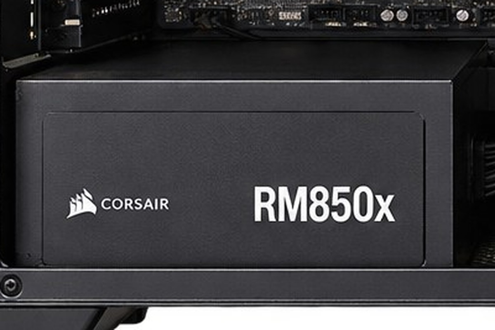

Sursă de alimentare
Sursa de energie electrică a sistemului.
Sursa de alimentare convertește tensiunea din rețea în tensiunile necesare componentelor. O sursă de calitate protejează sistemul, iar una necorespunzătoare poate cauza instabilitate sau defecțiuni.

Specificații tehnice
Putere
450–1000 W
Se adaugă aproximativ 25% peste consumul total estimat.
Eficiență
Bronze – Titanium
Un grad superior reduce pierderile sub formă de căldură.
Cabluri
Modulare sau fixe
Cablurile modulare facilitează organizarea interiorului.
Garanție
5–12 ani
O garanție extinsă indică încrederea producătorului în produs.
Recomandare
Sursa de alimentare nu este componenta la care se recomandă economia; o defecțiune a ei poate afecta și alte componente.
Criterii de selecție
- O rezervă de putere de 20–30% peste consumul estimat.
- Disponibilitatea conectorilor necesari plăcii video.
- Protecțiile la suprasarcină și la scurtcircuit.
- Lungimea cablurilor, în raport cu dimensiunile carcasei.
Erori frecvente
- Selectarea unei surse în funcție exclusivă de preț.
- Dimensionarea fără rezervă de putere.
- Omiterea verificării conectorilor pentru placa video.